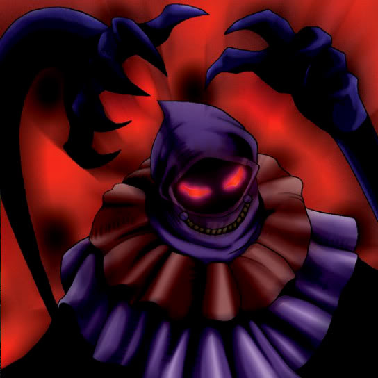

The Shadow Who Controls the Dark

Description: "When this card is flipped face-up in battle, the engaged enemy is spellbound for 3 turns."
STATS
ATK: 800
DEF: 700DECK COST
Deck Cost per Card: 20EFFECT NOT IMPLEMENTED
Fusion List (13 Possible Fusions)
- The Shadow Who Controls the Dark + Ancient Tree of Enlightenment = Rose Spectre of Dunn
- The Shadow Who Controls the Dark + Arlownay = Rose Spectre of Dunn
- The Shadow Who Controls the Dark + Bean Soldier = Rose Spectre of Dunn
- The Shadow Who Controls the Dark + Dark Plant = Rose Spectre of Dunn
- The Shadow Who Controls the Dark + Fungi of the Musk = Darkworld Thorns
- The Shadow Who Controls the Dark + Job-Change Mirror = Ryu-Kishin Powered
- The Shadow Who Controls the Dark + Laughing Flower = Rose Spectre of Dunn
- The Shadow Who Controls the Dark + Mystical Elf = Dark Elf
- The Shadow Who Controls the Dark + Mystical Sheep #2 = Mystical Sheep #1
- The Shadow Who Controls the Dark + One-Eyed Shield Dragon = Blackland Fire Dragon
- The Shadow Who Controls the Dark + Queen of Autumn Leaves = Rose Spectre of Dunn
- The Shadow Who Controls the Dark + Tentacle Plant = Rose Spectre of Dunn
- The Shadow Who Controls the Dark + Yamatano Dragon Scroll = Koumori Dragon